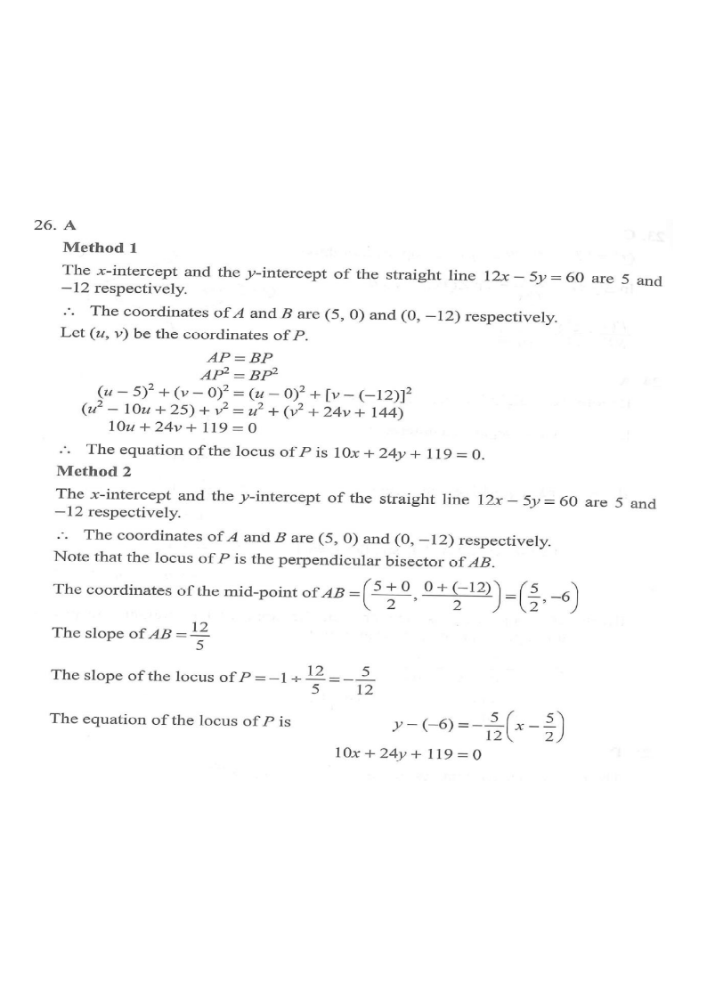

Drag the pink point $P$ along the locus — distances $AP$ and $BP$ stay equal.
The straight line $12x-5y=60$ cuts the $x$-axis and the $y$-axis at the points $A$ and $B$ respectively. Let $P$ be a moving point in the rectangular coordinate plane such that $AP=BP$. Find the equation of the locus of $P$.

Put $y=0$: $12x=60 \Rightarrow x=5$, so $A(5,0)$.
Put $x=0$: $-5y=60 \Rightarrow y=-12$, so $B(0,-12)$.
So the line cuts the axes at $A(5,0)$ and $B(0,-12)$.
Let $P(u,v)$. The condition is $AP=BP$, i.e. $AP^2=BP^2$:
$$\sqrt{(u-5)^2+(v-0)^2}=\sqrt{(u-0)^2+\bigl(v-(-12)\bigr)^2}$$Since $u$ and $v$ are the variables of the locus, we may rename $u\to x,\ v\to y$.
$$(u-5)^2+v^2=u^2+(v+12)^2$$
$$u^2-10u+25+v^2=u^2+v^2+24v+144$$
Cancel $u^2$ and $v^2$ from both sides.
$$-10u+25=24v+144$$
$$10u+24v+119=0$$
Replacing $(u,v)$ by $(x,y)$, the locus of $P$ is
$$10x+24y+119=0$$
This is the perpendicular bisector of $AB$ — indeed a straight line, so options C and D are ruled out.
Mid-point of $AB=\left(\dfrac{5+0}{2},\dfrac{0+(-12)}{2}\right)=\left(\dfrac52,-6\right)$.
Slope of $AB=\dfrac{-12-0}{0-5}=\dfrac{12}{5}$, so the perpendicular bisector has slope $-\dfrac{5}{12}$.
$$y-(-6)=-\frac{5}{12}\left(x-\frac52\right)\;\Rightarrow\;10x+24y+119=0$$
Both methods give the same line — a good confirmation.